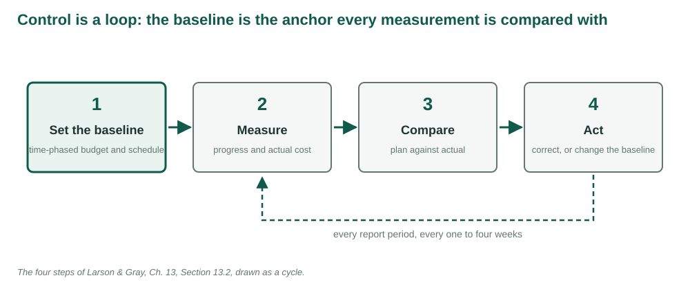
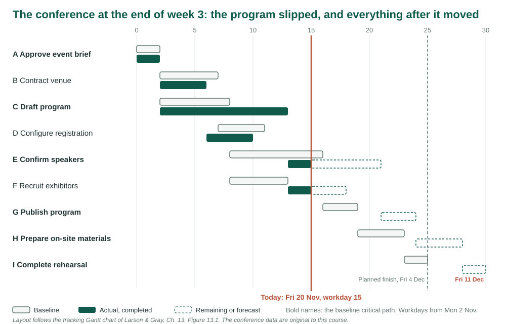
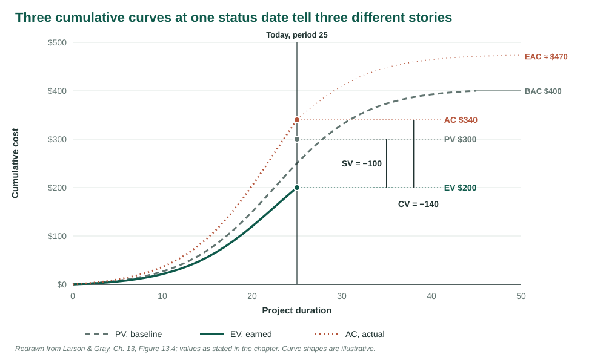
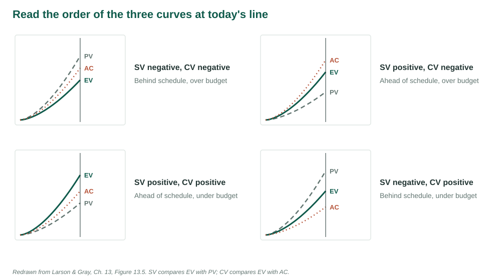
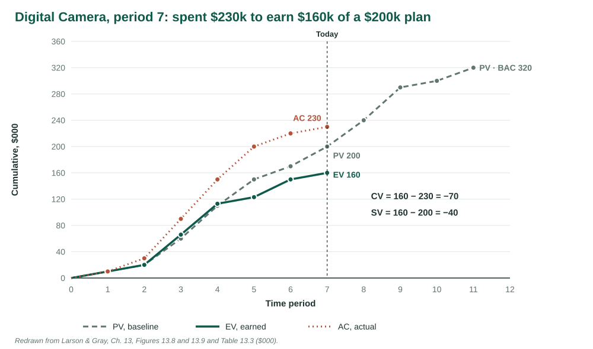
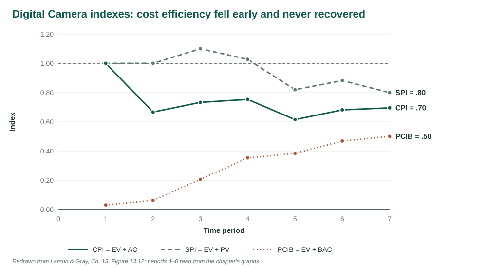
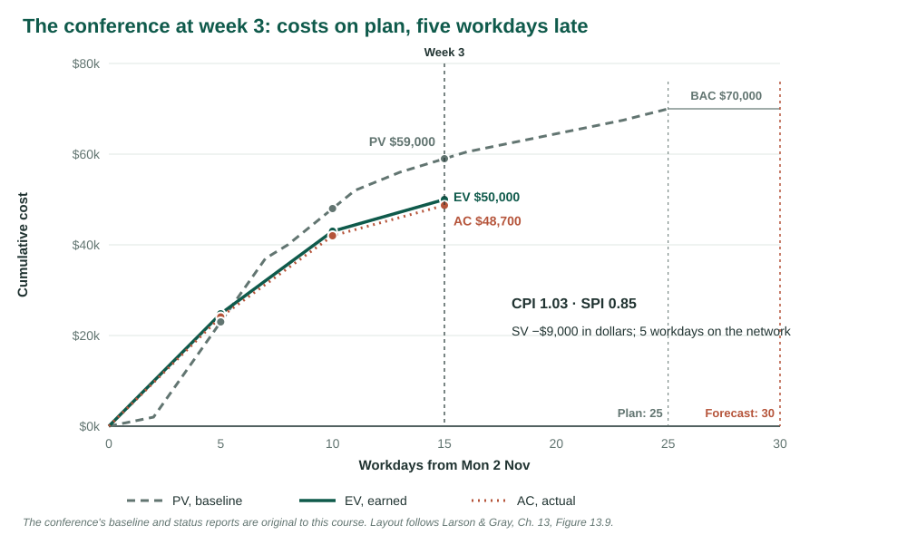

Week 11 · Progress and Performance Measurement
Recording — posts after the session.
Source. This week’s notes follow Larson & Gray, Project Management: The Managerial Process, 2024 Release, McGraw Hill, Chapter 13 [1]. The exposition is reworded; the control process, the tracking Gantt chart, earned value management and its glossary, the variances, indexes and forecasts, the earning rules and the discussion of scope and baseline changes are the chapter’s. Figures 2 to 6 are redrawn from the chapter’s Figures 13.1, 13.4, 13.5, 13.9 and 13.12, Figure 2 with the conference’s data in the chapter’s layout, and the Digital Camera example reproduces the values in its Figure 13.8 and Table 13.3; each says so where it appears. The chapter’s exercises are reproduced as written. The conference’s baseline, status reports and forecasts are original to these course materials. The accuracy of the CPI forecast is cited to Christensen [2] and Fleming and Koppelman [3], as the chapter cites them.
Learning objectives
| LO 13-1 | Identify the four steps for controlling a project. |
| LO 13-2 | Use a tracking Gantt chart to monitor time performance. |
| LO 13-3 | Explain why earned value management is needed. |
| LO 13-4 | Calculate and interpret cost and schedule variance. |
| LO 13-5 | Calculate and interpret performance and percent complete indexes. |
| LO 13-6 | Forecast final project cost. |
| LO 13-7 | Identify and manage scope creep and baseline changes. |
| LO A13.1-1 | Apply the simpler earned value rules to measure progress. |
Concepts introduced
control processbaselinetracking Gantt chartmilestone scheduleearned value (EV)planned value (PV)actual cost (AC)BACcost varianceschedule varianceCPISPIPCIB and PCICETC and EACVACTCPIpercent complete rule0/100 and 50/50 rulesscope creeprubber baseline
LO 13-1 · The four steps of control
Following Larson & Gray, Ch. 13, Sections 13.1 and 13.2 [1].
Weeks 4 to 10 built a plan for the conference: a scope, a network, estimates, a resource-feasible schedule, a time-phased budget, and a date bought at the lowest price. This week the conference starts, and the question becomes whether it is going to plan.
Control is comparing what is happening with what was planned, deciding whether the difference matters, and acting on it. The chapter breaks it into four steps [1]:
- Set a baseline. The time-phased plan of work, resources and budget, built from the WBS and the resource schedule. Week 9 built the conference’s.
- Measure progress and performance. Time is easy to measure: is the critical path early or late, and is the slack on near-critical paths shrinking? Cost is harder, because money spent says nothing about how much work it bought.
- Compare plan with actual. Status reports every one to four weeks catch a deviation while it can still be corrected.
- Take action. If the deviation matters, correct it: authorise overtime, crash an activity, reassign people. If the scope or the conditions have changed, revise the baseline.

A monitoring system answers a short list of questions, and the data it collects should be chosen to answer them: where the project stands on schedule and cost; what it will cost and when it will finish; which problems need attention now; and who, what and where is causing any overrun [1]. The data are usually actual durations, actual resource use and actual costs, collected at the work package level and compared with the planned values for the same packages.
LO 13-2 · Monitoring time with a tracking Gantt chart
Following Larson & Gray, Ch. 13, Section 13.3 [1].
A tracking Gantt chart draws each activity twice: its baseline bar, and below it the actual bar for the work done plus a bar for the work still to do. Activities that finished early or late, activities in progress and their expected remaining duration, and activities pushed later by their predecessors are all visible against the plan at once [1].

Two other displays summarise time performance for different audiences. A project schedule control chart plots, at each report, how many time units the project is ahead of or behind schedule, so a trend toward lateness is visible before it becomes large. A milestone schedule lists the major deliverables with planned and actual dates and the difference in days. It suits sponsors, owners and regulators who want to know whether the big events are on time and have no use for activity detail. The chapter’s example is a university reporting a new business school building to its president: schematic design five days late, historic review ten days early, and so on down to occupancy [1].
LO 13-3 · Why earned value is needed
Following Larson & Gray, Ch. 13, Section 13.4 [1].
The chapter makes the case with a painting contract [1]. Ten identical condos, two weeks and $10,000 each: 20 weeks and $100,000 in all. Ten weeks in, $50,000 has been spent. That sounds like on plan, because half the time has gone and half the money. But if good weather let the crew paint six condos for that $50,000, the project is ahead and under budget; if bad weather allowed only four, it is behind and over. Planned cost and actual cost alone cannot tell these apart, because neither says how much work was done.
Earned value supplies the missing number: the budgeted cost of the work actually completed. If 4½ condos are painted, their budget is $45,000, and that is what the project has earned, whatever it spent to get there.
| Term | Meaning |
|---|---|
| PV, planned value | The time-phased baseline: the budget of the work scheduled to be done by now. Older name BCWS. |
| EV, earned value | The budget of the work actually done by now: percent complete × budget, summed. Older name BCWP. |
| AC, actual cost | What the work done by now actually cost. Older name ACWP. |
| CV, cost variance | EV − AC. Negative: the work done cost more than its budget. |
| SV, schedule variance | EV − PV. Negative: less work is done than planned, in dollars. |
| BAC, budget at completion | The total budget of the baseline. |
| ETC, estimate to complete | The forecast cost of the remaining work. |
| EAC, estimate at completion | The forecast total cost: AC + ETC. |
| VAC, variance at completion | BAC − EAC: the forecast over- or underrun. |
An earned value system works only if cost and schedule are tied together from the start. The chapter’s five steps [1]: define the work with a WBS and OBS, down to work packages with budgets (Weeks 4 and 5); schedule the work and resources in a network (Weeks 6 to 9); time-phase the budgets into the baseline PV (Week 9); during execution, collect actual cost and percent complete for each work package; and compute the variances, rolled up by deliverable and by organisation unit, alongside a check of the network schedule.
Percent complete is the heart of the system. The more objective the measure behind it, the better: units finished, lines of code, drawings issued, cubic yards poured. Many organisations cap the credit at 80 or 90 percent until a work package is actually finished, so the last 10 percent cannot be claimed early [1]. The baseline normally holds only the direct costs the project manager controls: labour, equipment and materials. Overhead and profit are added later by accounting [1]. That matters for the conference, whose $1,000-a-day indirect cost from Week 10 is not in its $70,000 BAC.
LO 13-4 · Cost and schedule variance
Following Larson & Gray, Ch. 13, Sections 13.4 and 13.5 [1].
Two computations carry the method: CV = EV − AC and SV = EV − PV. Both compare everything with EV, the value of the work done. PV is the anchor; AC says what the work cost; EV says what it was worth.

In Figure 3, three-quarters of the work was scheduled by period 25, half was done, and 85 percent of the budget is spent. CV = 200 − 340 = −140: over budget. SV = 200 − 300 = −100: behind. The chapter reads the graph as pointing toward roughly an 18 percent cost overrun and a finish about five periods late [1]. Every combination of signs is possible, and the order of the three curves at today’s line gives it away (Figure 4).

The chapter’s example: a Digital Camera prototype
The chapter works a six-activity project with a budget of $320,000 and a planned duration of 11 periods [1]. To keep it simple, each cost account is one work package and one activity; the baseline is laid out at early start; and an activity incurs some cost every period it is in progress.
| Activity | Duration | ES | LF | Slack | Budget | 1 | 2 | 3 | 4 | 5 | 6 | 7 | 8 | 9 | 10 | 11 |
|---|---|---|---|---|---|---|---|---|---|---|---|---|---|---|---|---|
| A Design specifications | 2 | 0 | 2 | 0 | 20 | 10 | 10 | |||||||||
| B Shell & power | 2 | 2 | 6 | 2 | 15 | 5 | 10 | |||||||||
| C Memory/software | 4 | 2 | 6 | 0 | 100 | 20 | 30 | 30 | 20 | |||||||
| D Zoom system | 3 | 2 | 6 | 1 | 35 | 15 | 10 | 10 | ||||||||
| E Assemble | 3 | 6 | 9 | 0 | 120 | 30 | 40 | 50 | ||||||||
| F Test | 2 | 9 | 11 | 0 | 30 | 10 | 20 | |||||||||
| PV by period | 320 | 10 | 10 | 40 | 50 | 40 | 20 | 30 | 40 | 50 | 10 | 20 | ||||
| Cumulative PV | 10 | 20 | 60 | 110 | 150 | 170 | 200 | 240 | 290 | 300 | 320 |
Each period, the people in the field report percent complete and actual cost for every activity. An activity not started earns nothing; a finished one earns its whole budget; one in progress earns its percent complete times its budget [1].
| Report | Activity | % complete | EV | AC | PV | CV | SV |
|---|---|---|---|---|---|---|---|
| Period 1 | A | 50% | 10 | 10 | 10 | 0 | 0 |
| Period 2 | A | finished | 20 | 30 | 20 | −10 | 0 |
| Period 3 | A | finished | 20 | 30 | 20 | −10 | 0 |
| B | 33% | 5 | 10 | 5 | −5 | 0 | |
| C | 20% | 20 | 30 | 20 | −10 | 0 | |
| D | 60% | 21 | 20 | 15 | +1 | +6 | |
| Total | 66 | 90 | 60 | −24 | +6 | ||
| Period 7 | A, B, D | finished | 70 | 110 | 70 | −40 | 0 |
| C | 90% | 90 | 120 | 100 | −30 | −10 | |
| E | not started | 0 | 0 | 30 | 0 | −30 | |
| Total | 160 | 230 | 200 | −70 | −40 |
At period 3 the project looks ahead of schedule (SV +6) and is already over budget (CV −24). By period 7, A, B and D are finished and all three ran over; C, memory and software, is 90 percent done, $30,000 over, and late. E cannot start until C is done. The project has spent $230,000 to earn $160,000 against a plan of $200,000.

The tracking Gantt chart adds what the dollars cannot: C, planned for four periods, now needs six, which delays E and F and the whole project by two periods [1]. Rolled up by deliverable and department, the variances point at their owners. The Storage department’s memory and software deliverable is at SV −$10,000 and CV −$30,000; Assembly’s SV of −$30,000 is not Assembly’s fault, because its work is waiting on C [1].
SV is in dollars, not time. A project can show a negative SV while it is ahead on the critical path, if noncritical work is lagging, and a near-zero SV while the critical path slips, if large noncritical activities are ahead. The chapter calls SV a fair indicator of overall schedule status once a project is past about 20 percent complete, and says only the network or the tracking Gantt chart measures schedule accurately at the work package level [1].
LO 13-5 · Performance and percent complete indexes
Following Larson & Gray, Ch. 13, Section 13.6 [1].
Dividing instead of subtracting turns the variances into efficiency ratios that can be compared across projects and plotted over time.
| Index | Formula | Above 1.00 | At 1.00 | Below 1.00 |
|---|---|---|---|---|
| CPI, cost performance index | EV ÷ AC | under cost | on cost | over cost |
| SPI, schedule performance index | EV ÷ PV | ahead of schedule | on schedule | behind schedule |
For the camera at period 7, CPI = 160 ÷ 230 = .70: each dollar spent has bought 70 cents of planned work. SPI = 160 ÷ 200 = .80: 80 cents of work done for each dollar of work scheduled. The CPI is the most widely used index and the most trusted. US government studies found it stable from about 20 percent complete, whatever the contract or program, which makes it an early warning of an overrun [1].

Two percent complete indexes compare progress so far with the whole project [1]:
- PCIB = EV ÷ BAC, percent complete in budget terms. For the camera, 160 ÷ 320 = .50: half the budgeted work is done. It ignores what was spent, and suits a project whose original estimates are trusted.
- PCIC = AC ÷ EAC, percent complete in spending terms, using a revised estimate at completion. The camera’s team re-estimates EAC at 575, so PCIC = 230 ÷ 575 = .40. It suits managers who trust the newer estimate more than the original budget.
The two can differ a great deal, and both assume nothing changes from here. Construction projects often add a third: how much of the management reserve the overruns have used up. The camera set aside $40,000 and is $70,000 over, so its cost variance has absorbed 175 percent of the reserve.
Other ways to earn value
Following Larson & Gray, Ch. 13, Section 13.6 and Appendix 13.1 [1]. LO A13.1-1.
Estimating percent complete for every work package every period takes effort, and the estimates are subjective. Three simpler rules reduce both [1]:
- 0/100. Nothing is earned until the work package is finished; then all of it. For very short packages.
- 50/50. Half is earned when the package starts and half when it finishes. For short, low-cost packages.
- Weighted monitoring gates. A long activity is split into discrete steps, each worth a fixed share of the budget, and the earned value at each gate cannot exceed that share. A $500 activity with gates at 30, 50 and 100 percent earns at most $150, $250 and $500. This rule is common for progress payments to contractors, because it stops payment for work not yet done.
The first two need only two facts, started and finished, which removes the guesswork. The same status report earns different amounts under each rule, and so gives a different CPI and SPI.
LO 13-6 · Forecasting the final cost
Following Larson & Gray, Ch. 13, Section 13.7 [1].
There are two ways to revise the forecast of what the project will cost [1]. The first lets the people doing the work re-estimate what is left, usually on smaller projects:
\[ \text{EAC}_{re} = \text{AC} + \text{ETC}_{re} \]
The second, used on large projects with a reliable original budget, assumes the cost efficiency so far continues on the work that remains:
\[ \text{ETC} = \frac{\text{BAC} - \text{EV}}{\text{CPI}} \qquad \text{EAC}_f = \text{AC} + \text{ETC} \]
For the camera: ETC = (320 − 160) ÷ .696 = 230, EAC = 230 + 230 = 460, and VAC = 320 − 460 = −140. If nothing changes, the $320,000 prototype costs $460,000. Research the chapter cites found this forecast within 10 percent on large projects more than 15 percent complete [2], [3]. It assumes the cost data are reliable, that EV and AC are cumulative, and that the past predicts the future, so it is a benchmark against which to compare other forecasts.
The to-complete performance index asks the question from the other side: how efficient must the remaining work be to finish on budget?
\[ \text{TCPI} = \frac{\text{BAC} - \text{EV}}{\text{BAC} - \text{AC}} \]
For the camera, (320 − 160) ÷ (320 − 230) = 1.78. Every remaining dollar would have to earn $1.78 of work, after the project has managed 70 cents so far. That will not happen: the scope must shrink or the budget must grow. A TCPI below 1.00 means the remaining budget is more than enough, which frees money for quality, margin or scope [1].
The chapter’s example monthly report for a conveyor belt project, Red Octopus, shows how the measures appear together [1]:
| PV | EV | AC | SV | CV | BAC | EAC | VAC | EACf | CPI | PCIB | PCIC |
|---|---|---|---|---|---|---|---|---|---|---|---|
| 588,240 | 566,064 | 596,800 | −22,176 | −30,736 | 1,051,200 | 1,090,640 | −39,440 | 1,107,469 | .95 | .538 | .547 |
The narrative under it does what the numbers cannot. The project is about 25 days late, a figure taken from the network rather than from the $22,176 SV; the delay has moved onto the critical path; it traces to losing a design team; and $21,000 of the cost variance is an approved design change [1].
The conference: status reports
The conference’s baseline is the Week 9 schedule at early start: each activity’s budget spread evenly over its planned workdays. Weekly status reports run from Mon 2 Nov.
| ID | Activity | Planned workdays | Budget | Week 1 | Week 2 | Week 3 | Week 4 | Week 5 |
|---|---|---|---|---|---|---|---|---|
| A | Approve event brief | 1–2 | $2,000 | 2,000 | ||||
| B | Contract venue | 3–7 | 30,000 | 18,000 | 12,000 | |||
| C | Draft program | 3–8 | 6,000 | 3,000 | 3,000 | |||
| D | Configure registration | 8–11 | 8,000 | 6,000 | 2,000 | |||
| E | Confirm speakers | 9–16 | 12,000 | 3,000 | 7,500 | 1,500 | ||
| F | Recruit exhibitors | 9–13 | 2,500 | 1,000 | 1,500 | |||
| G | Publish program | 17–19 | 3,000 | 3,000 | ||||
| H | Prepare on-site materials | 20–23 | 4,000 | 1,000 | 3,000 | |||
| I | Complete rehearsal | 24–25 | 2,500 | 2,500 | ||||
| PV this week | $70,000 | 23,000 | 25,000 | 11,000 | 5,500 | 5,500 | ||
| Cumulative PV | 23,000 | 48,000 | 59,000 | 64,500 | 70,000 |
Worked example: the week-2 status report
Fri 13 Nov, end of week 2. The coordinators report:
| ID | Activity | % complete | Actual cost | EV | PV | CV | SV |
|---|---|---|---|---|---|---|---|
| A | Approve event brief | finished | $2,100 | ||||
| B | Contract venue | finished | 28,500 | ||||
| C | Draft program | 50% | 3,800 | ||||
| D | Configure registration | finished | 7,600 | ||||
| E, F | Confirm speakers, recruit exhibitors | not started | 0 | ||||
| Total |
The venue was contracted a day early and $1,500 under budget, and registration, which follows it, is finished too. The program draft is half done, two days after it was due to finish, because the program lead was away. Work it by hand first, then check every number in the interactive earned value notebook, which opens in the browser with nothing to install. Choose the conference and End of week 2, keep Show the answers off until you have finished, then switch it on. The same notebook runs the Digital Camera example, lets you change any activity’s percent complete and actual cost, switches between earning rules, and draws the graphs.
The CPI that looked good
Fri 20 Nov, end of week 3. The program draft finished on workday 13, after 11 workdays instead of 6. Speakers and exhibitors started the next day. The report:
| ID | % complete | Actual cost | Duration now expected |
|---|---|---|---|
| A | finished | $2,100 | 2 days, as planned |
| B | finished | 28,500 | 4 days (planned 5) |
| C | finished | 6,400 | 11 days (planned 6) |
| D | finished | 7,600 | 4 days, as planned |
| E | 25% | 3,200 | 8 days, as planned |
| F | 40% | 900 | 5 days, as planned |
The coordinator’s dashboard shows CPI 1.03 and a forecast $1,820 under budget, and the report to the sponsor says the conference is under budget and on track.
What does the dashboard leave out? When will the conference actually finish, and what will it cost once the $1,000 a day of indirect cost from Week 10 is counted? What should the coordinator propose, and what would it cost?

The week-3 dollars say SPI .85: 15 percent of the scheduled work is missing. The network says 5 of 25 workdays, 20 percent of the plan, because the late work is on the critical path and the $30,000 venue, which finished early, props up the total. Section 5 of the earned value notebook recomputes the network from each status report, and section 7 prices a recovery from Week 10’s crash data.
LO 13-7 · Scope creep, baseline changes and the cost of data
Following Larson & Gray, Ch. 13, Section 13.8 [1].
Technical performance
Cost and schedule are not the whole story. A project under budget and early that delivers something that does not work has failed [1]. Technical performance is measured against the requirements in the scope statement and work packages, which should state criteria and tolerances. The measure depends on the project: defects found in software, a prototype car’s fuel economy against its specification, engagement with a marketing campaign. Tests and inspections belong in the schedule, and quality tools such as histograms, scatter diagrams and Pareto charts help find causes [1].
Scope creep
Scope creep is the gradual growth of a project’s scope through additions that each look small, accepted without a formal change, a new budget or a new date. Each one consumes time and money the baseline never held, so the variances worsen for reasons the status report cannot explain. The defence is the one Week 4 set up: a clear scope statement, and a change control process through which every addition is priced, approved and written into the baseline.
Baseline changes
Change is inevitable and some of it is good [1]. It comes from outside, such as a customer request or a new regulation, or from inside, as people find problems or better ways. Force majeure, such as floods, hurricanes or a pandemic, can make a baseline meaningless. When the scope genuinely changes, the baseline should change with it, adding cost for added scope and removing cost for removed scope.
Baseline changes must not be used to hide poor performance. A baseline revised so often that it always matches the results is a rubber baseline: it stretches to fit whatever happened [1]. The chapter’s rules: most changes are absorbed as variances rather than new baselines; no retroactive changes to work already done; no moving money between cost accounts after the work is finished; and unforeseen events are paid for from the contingency reserve, usually at the project manager’s discretion. On large projects a joint change review team of project and customer staff may decide every change [1].
The cost of data
Collecting percent complete is time-consuming and unpopular [1]. Some organisations use pseudo percent complete systems, with weekly work packages and simple completion reports, which work well across many small and medium projects. On large projects there is no substitute for percent complete measured at clearly defined monitoring points. Data that exist but never reach the people who need them are as useless as no data. The communication plan decides who receives which report, how often and in what form [1]:
| Information | When | Mode | Responsible |
|---|---|---|---|
| Milestone report | Bimonthly | Project office | |
| Time/cost report | Weekly | Project office | |
| Risk report | Weekly | Project office | |
| Issues | Weekly | Anyone | |
| Team meeting times | Weekly | Meeting | Project manager |
| Outsourcing performance | Bimonthly | Meeting | Project manager |
| Change requests | Anytime | Document | Project manager, customer, design |
| Stage gate decisions | Monthly | Meeting | Project office |
Practice exercises
The chapter’s exercises are reproduced as written [1]. Exercise 3’s network is transcribed into its baseline table; its status forms are given as far as this course’s copy of the chapter shows them.
In month 9 the following project information is available: actual cost is $2,000, earned value is $2,100, and planned cost is $2,400. Compute the SV and CV for the project.
On day 51 a project has an earned value of $600, an actual cost of $650, and a planned cost of $560. Compute the SV, CV, and CPI for the project. What is your assessment of the project on day 51?
Given the following project network and baseline information, complete the form to develop a status report for the project at the end of period 4 and the end of period 8. From the data you have collected and computed for periods 4 and 8, what information are you prepared to tell the customer about the status of the project at the end of period 8?
Network: A precedes B and C; B precedes D; C precedes E; D and E precede F.
| Task | DUR | ES | LF | SL | Budget (PV) | 1 | 2 | 3 | 4 | 5 | 6 | 7 | 8 | 9 | 10 | 11 | 12 | 13 | 14 | 15 |
|---|---|---|---|---|---|---|---|---|---|---|---|---|---|---|---|---|---|---|---|---|
| A | 2 | 0 | 2 | 0 | 400 | 200 | 200 | |||||||||||||
| B | 6 | 2 | 8 | 0 | 2,400 | 200 | 600 | 200 | 600 | 200 | 600 | |||||||||
| C | 5 | 2 | 9 | 2 | 1,500 | 200 | 400 | 500 | 100 | 300 | ||||||||||
| D | 4 | 8 | 12 | 0 | 1,600 | 400 | 400 | 400 | 400 | |||||||||||
| E | 3 | 7 | 12 | 2 | 900 | 300 | 400 | 200 | ||||||||||||
| F | 3 | 12 | 15 | 0 | 600 | 200 | 100 | 300 | ||||||||||||
| Period PV total | 200 | 200 | 400 | 1,000 | 700 | 700 | 500 | 900 | 800 | 600 | 400 | 400 | 200 | 100 | 300 | |||||
| Cumulative PV | 200 | 400 | 800 | 1,800 | 2,500 | 3,200 | 3,700 | 4,600 | 5,400 | 6,000 | 6,400 | 6,800 | 7,000 | 7,100 | 7,400 |
| End of period 4 | Actual % complete | EV | AC | PV | CV | SV |
|---|---|---|---|---|---|---|
| A | Finished | 300 | 400 | |||
| B | 50% | 1,000 | 800 | |||
| C | 33% | 500 | 600 | |||
| D | 0% | 0 | ||||
| E | 0% | |||||
| Cumulative totals |
| End of period 8 | Actual % complete | EV | AC | PV | CV | SV |
|---|---|---|---|---|---|---|
| A | Finished | 300 | 400 | |||
| B | Finished | 2,200 | 2,400 | |||
| C | Finished | 1,500 | 1,500 | |||
| D | 25% | 300 | 0 | |||
| E, F | as given in the chapter | |||||
| Cumulative totals |
Exercises are reproduced from Larson & Gray, Project Management: The Managerial Process, 2024 Release, McGraw Hill, Chapter 13 [1]. The network and baseline of exercise 3 are transcribed from the chapter’s figure; the rows for E and F at period 8 are in your copy of the chapter. Exercise 1 is a quick check of the signs. In exercise 3, compare SV with what the network says about the critical path before you write the customer’s summary.
Thursday studio
Studio 11 · Build the dashboard, then find what it hides
Complete the Week 11 studio.
You will import the conference’s baseline into Smartsheet, set a project baseline so the Gantt chart tracks against it, add the earned value columns and summary fields, and enter the week-3 status report. Then you will build a dashboard of the measures, use the baseline Gantt chart to find the slip the dashboard does not show, and post week 4. In Colab, the earned value notebook charts the weekly reports, recomputes the network, compares earning rules and prices a recovery.
Sources
- Larson, E. W., & Gray, C. F. Project Management: The Managerial Process, 2024 Release. McGraw Hill. Chapter 13.
- Christensen, D. S. (1998). The costs and benefits of the earned value management process. Acquisition Review Quarterly, 5(4), 373–386.
- Fleming, Q. W., & Koppelman, J. M. (2010). Earned Value Project Management (4th ed.). Project Management Institute.
The conference’s baseline, status reports, forecasts and recovery are original to these course materials.